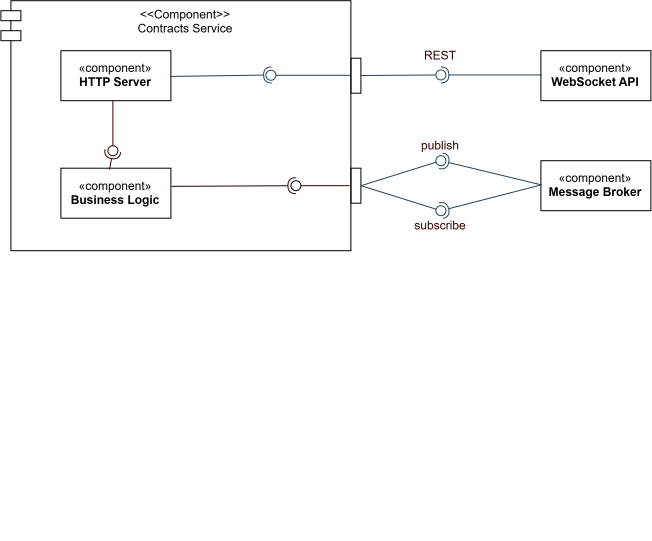

/
CrowdVision · source-available, not open source · © 2026 Nicolò Ghignatti
Bounded context: real-time transport (generic) · Stack: Rust / Axum / socketioxide · Code-level walkthrough: Socket Service
The socket is the bridge between the broker and the browser. It carries per-building telemetry and alerts to connected clients over WebSockets. It is classified as a generic subdomain (see Telemetry Distribution: pure transport, with no domain model and no database.
Deliberately the simplest service in the system: no persistence and no domain model. No ports-and-adapters layering, because there is no domain logic to isolate. Instead the split is the directory structure itself — src/core/ and src/shell/ — so the architecture is visible in the file tree and mechanically checkable.
src/core/ is pure and carries every unit test: rooms.rs (room_for_building, room_for_domain, building_id_from_channel), auth.rs (authenticate_claims_header: claims header → Identity; may_read_building: caller domains ∩ building domains), and relay.rs (telemetry_delivery, notification_delivery: a Redis message → the room it belongs in). String and JSON manipulation only, no I/O, no socket types.src/shell/ is everything that touches the outside world: handlers.rs runs the connect middleware, joins and leaves rooms, and emits; server.rs builds the Axum router, the CORS layer, and the Redis subscriber loop; twin.rs resolves a building’s domains from digital-twin behind a 60s cache; metrics.rs owns the Prometheus registry.src/main.rs binds the port and installs the shutdown signal — nothing else.The connect middleware decodes the mesh-injected x-gateway-claims header on the WebSocket handshake (Istio’s RequestAuthentication already verified it once, upstream — the same trust model every other migrated service uses) and stores the resulting Identity in the socket’s extensions, server-side.
subscribe_building authorises per building, not per session: shell/twin.rs asks digital-twin for GET /domain/{buildingId}, forwarding the caller’s own claims header, and core::auth::may_read_building requires a shared domain before the socket joins the room. The emit path is untouched — room membership is the authorisation, so relaying stays a single io.to(room) with no per-message check.
200 [], which denies via the same predicate and stops a client probing arbitrary ids from amplifying into digital-twin.digital-twin blip cannot blank dashboards for the whole TTL.socket_subscriptions_rejected_total{reason} separates forbidden from lookup_failed: a cross-tenant attempt and a digital-twin outage must not read the same on a dashboard.Authorisation is point-in-time, evaluated at subscribe. A socket keeps its rooms until it is dropped, so that window is bounded by the socket lifetime below rather than by network stability.
A socket is disconnected once it has been open longer than SOCKET_MAX_LIFETIME_SECS (default 15 min, matching claims-gateway’s TokenTTL). A sweep task in shell/server.rs walks io.sockets() every core::session::sweep_interval (a tenth of the lifetime, capped at 30s) and drops whatever has aged out, counting socket_sessions_expired_total.
Reconnection re-runs the whole handshake, so the claims header is rebuilt from the cookie the browser sends — that is the re-validation. It needs no user interaction, but it does need the client to ask for it.
SocketRef::disconnect() sends a namespace DISCONNECT packet; socket.io-client reports that as io server disconnect, tears the engine.io transport down, and deliberately does not reconnect. services/socket.ts therefore reconnects explicitly on that reason, through the same delayed hydrate-then-connect path connect_error uses — so an expired session stays down instead of hammering the edge. Because the transport really is gone, the reconnect is a fresh HTTP handshake with a fresh cookie, not a namespace re-CONNECT replaying the original headers.
Room membership does not survive the reconnect. Domain rooms are rejoined server-side from the new claims; building rooms are client state, so useSensorData’s connect handler re-emits subscribe_building and refetches to close the gap in the series.
core::session::lifetime_for subtracts a per-socket jitter of up to an eighth of the lifetime, derived by hashing the socket id. Without it every client connected by the same deploy would expire in lockstep and re-handshake in one burst, forever.
Total socket life is capped at the configured lifetime (plus at most one sweep interval), but a socket opened just before its token dies can still outlive that token by nearly the full window. Closing that exactly needs an exp in the Stable Claims Contract, which {sub, accountName, sid, memberships} does not carry. Accepted: with the frontend keep-alive renewing every 10 min, an active client’s token is continuously fresh, so the residual case is a client that stops renewing — and that one is bounded by the lifetime.
graph LR
subgraph "src/shell — Imperative Shell"
SRV["server.rs\ncomposition root + Redis loop"]
HND["handlers.rs\nconnect · subscribe · emit"]
TWIN["twin.rs\nbuilding → domains, cached"]
SWEEP["server.rs\nlifetime sweep"]
end
subgraph "src/core — Functional Core"
AUTH["auth.rs\nauthenticate_claims_header"]
REL["relay.rs\ntelemetry_delivery · notification_delivery"]
ROOMS["rooms.rs\nroom_for_building · room_for_domain\nbuilding_id_from_channel"]
end
BR1[(broker: notifications)] --> SRV
BR2[(broker: telemetry:filtered:*)] --> SRV
SRV --> REL
SRV -->|"io.ns('/', on_connect.with(authenticate))"| HND
HND --> AUTH
HND --> TWIN
SWEEP --> SESS["session.rs\nlifetime_for · sweep_interval"]
TWIN -->|"GET /domain/{id}"| TS[digital-twin]
HND --> ROOMS
REL --> ROOMS
SRV -->|room-scoped| CL[Connected clients]
SRV -->|room-scoped / broadcast| CLThe core/shell split is test-enforced, not a convention — tests/architecture.rs walks src/core/ and src/shell/ and fails the build on:
| Rule | Why it matters |
|---|---|
Every Rust source file under src/ lives in src/core/ or src/shell/ (only lib.rs and main.rs are exempt). | Without this, a new file added at src/ level is silently exempt from every rule below. This is the rule that keeps the others honest as the service grows. |
Nothing under src/core/ imports an I/O crate — no axum, redis, socketioxide, tokio, tower_http, prometheus. | The moment a socket type reaches the core, its logic stops being testable without infrastructure. |
Nothing under src/core/ names crate::shell. | Dependencies point inward. The shell calls the core, never the reverse. |
No async fn or await under src/core/. | A pure function has nothing to await; async there is proof that I/O leaked in. |
The literals "building: and "domain: appear only in core/rooms.rs. | Room names are a wire contract with the browser. One source, or they drift. |
The literal x-gateway-claims appears nowhere under src/. | The header name is the trust boundary, owned by claims-schema and re-exported by core::auth as CLAIMS_HEADER. |
main.rs reaches only shell::server. | It binds a port and installs signal handlers; wiring is server.rs’s job. |
Both directory scans assert they found files at all, so a rename can’t quietly make every rule vacuously true.
Each rule was verified by injecting a violation and confirming the corresponding test fails — a fitness function that has never gone red is an assertion about nothing.

telemetry:filtered:<id>), and emits them to clients — see Communication & Data Flow.For the channel-to-event mapping, the client subscription protocol, and scaling notes, see the Socket Service internals page.